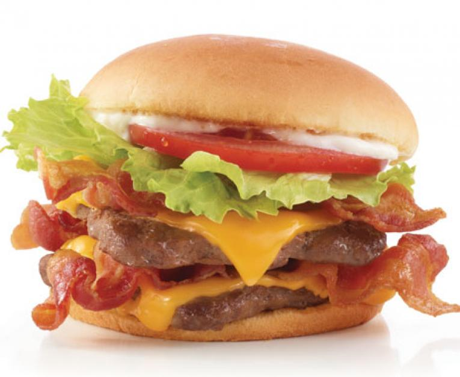

Jared Burger

Created in South Florida, the Jared Burger
The Jared Burger has always been a staple of my own personal
diet. Great to have once a week after a powerful workout.
Ingredients
- 1lb grass-fed beef
- organic green leaf(s) of choice
- 1tbsp olive oil
- white cheddar cheese
- 1 tomato
- 1 onion
- salt, pepper, worchester sauce
Steps
- The beef is mixed evenly with salt, pepper, and occasionally Worchester sauce. (1lb beef = 3 patties)
- Cast iron piece on stove is heated to a medium temp.
- Olive oil to coat cast iron.
- Apply burger(s). Let stand for 6 minutes.
- Flip burger(s), 5 minutes remain, on last minute add cheese.
- Remove burger(s)
- Add toppings, toast bun. Enjoy.